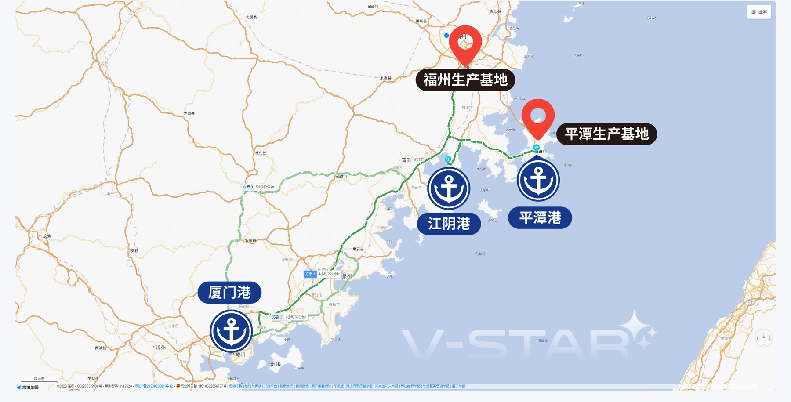
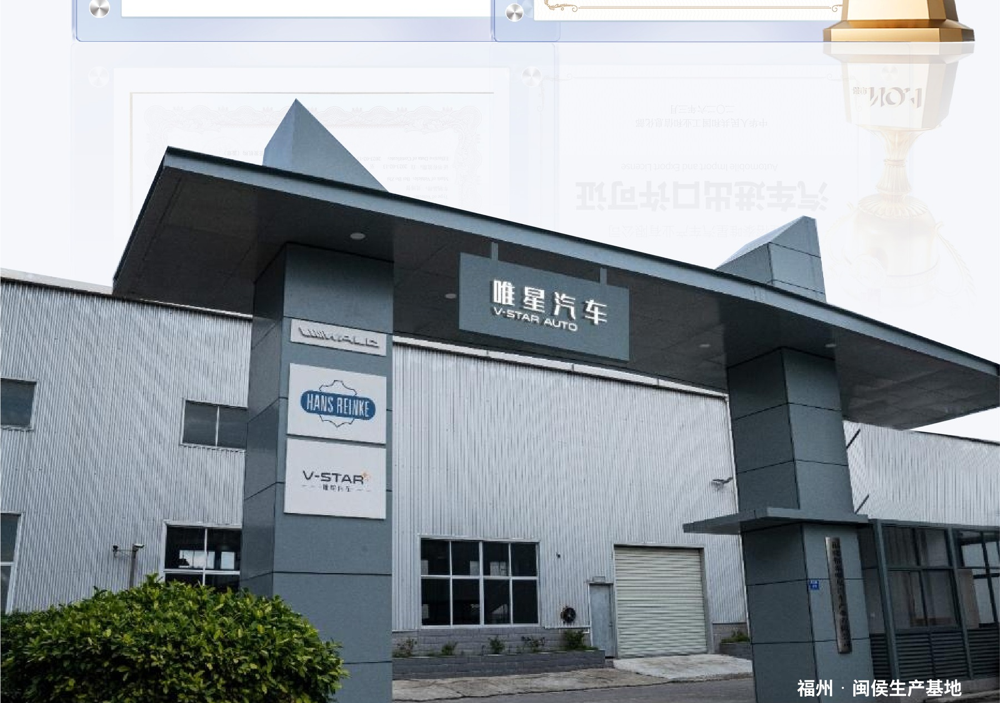
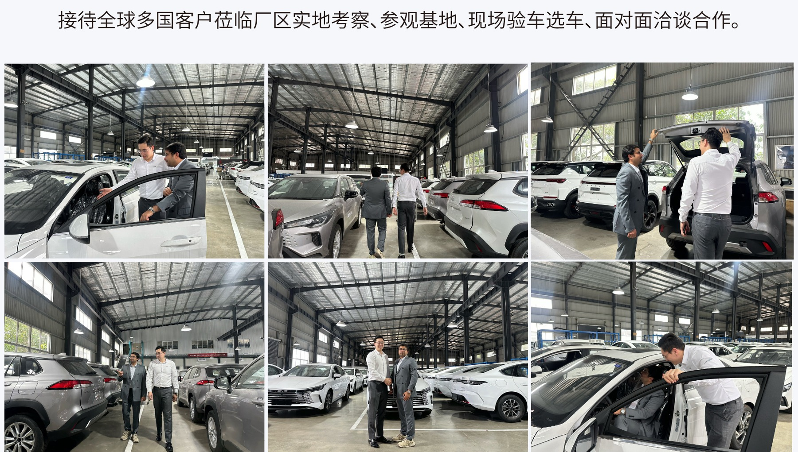
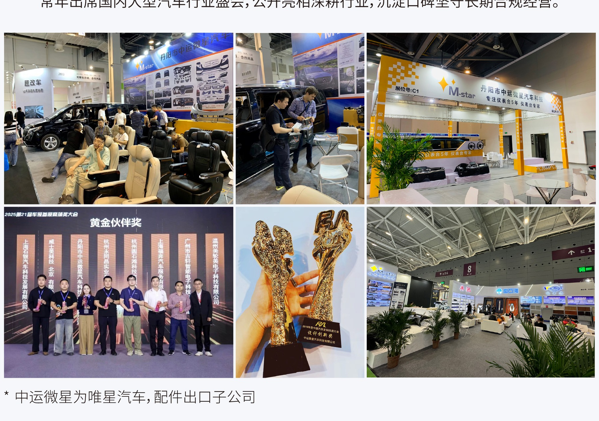
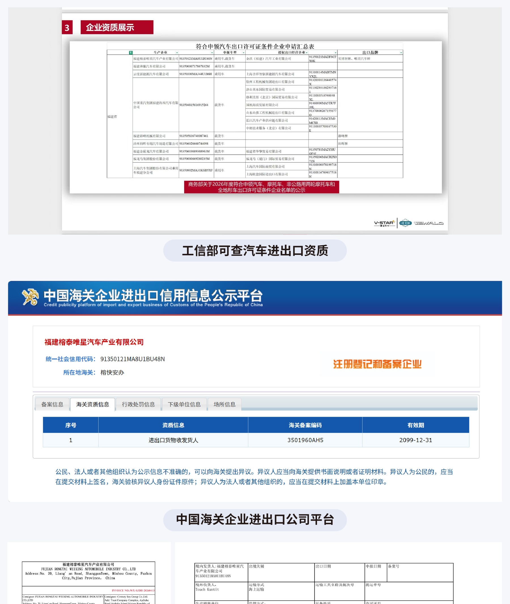
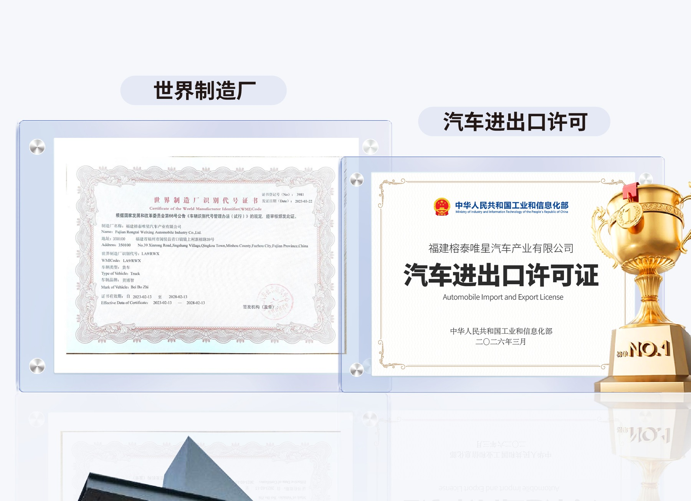
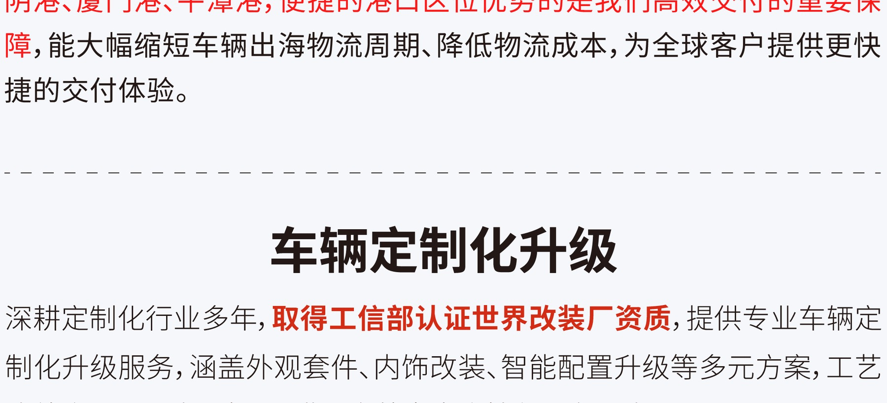

Certified exporter
Automobile import and export license, WMI materials, and manufacturer code records support compliant vehicle export business.
About V-Star
V-Star Auto operates from Fujian with certified export qualifications, physical vehicle yards, and port routes designed for efficient overseas delivery.
Operating footprint
Fujian export base
V-Star combines certified export qualifications with real Fujian operating sites, vehicle yards, and convenient southeast China port access.
Automobile import and export license, WMI materials, and manufacturer code records support compliant vehicle export business.
Minhou and Pingtan sites help coordinate vehicle preparation, storage, inspection, and dispatch before shipment.
Factory-area stock and available mainstream models support faster confirmation for sedans, SUVs, and selected commercial vehicles.
Close access to Jiangyin, Xiamen, and Pingtan ports helps shorten inland transfer time and reduce logistics uncertainty.

Mapped base
The live map marks V-Star's Minhou operating area, Fuzhou Jiangyin Port Area, and Pingtan Port Area for export route review.

Company profile
V-Star Auto supports overseas customers with cost-effective Chinese vehicle products, transparent trade processes, physical inspection opportunities, and full lifecycle support.
The company profile highlights cooperation with major domestic automotive groups, batch vehicle supply, overseas market delivery experience, and public corporate settlement for compliant transactions.
Clients can visit the Fujian bases, inspect vehicles on site, sign formal Chinese-English contracts, and coordinate export through verified documentation and port logistics follow-up.
Company video 企业视频
Review the company background, physical bases, vehicle export process, and service capability. 观看企业简介、实体基地、车辆出口流程及服务能力。
Field evidence

Inventory yard
Overseas customers can review available vehicles, confirm trims and colors, and discuss order details directly at the Fujian base.

Industry presence
Regular participation in automotive exhibitions and business events supports long-term channels, supplier communication, and buyer trust.

Risk control
Export records, customs references, packing lists, invoices, and shipment documents are prepared to reduce risk across the order process.
Credential review path
About V-Star introduces the company background; the certificate gallery keeps formal documents in one review area for easier buyer due diligence.

Business license and registered entity information support contract review.
Manufacturer code and WMI materials identify the vehicle business scope.
Quality management certification supports production and sales management review.
Open Credentials to review the certificate images.
Service advantages
Direct links to mainstream vehicle supply help improve dispatch speed, pricing control, and model availability.
International sales and after-sales communication can support fast buyer follow-up across different time zones.
Model photos, short videos, and reference configuration materials can support local promotion before bulk purchase.
Multiple cross-border payment and settlement arrangements can be discussed according to country and order structure.

Vehicle customization
V-Star also supports vehicle customization experience, including exterior kits, interior changes, and selected smart configuration upgrades.
Customization scope should be confirmed by model, destination market, export standard, and final order quantity before quotation.